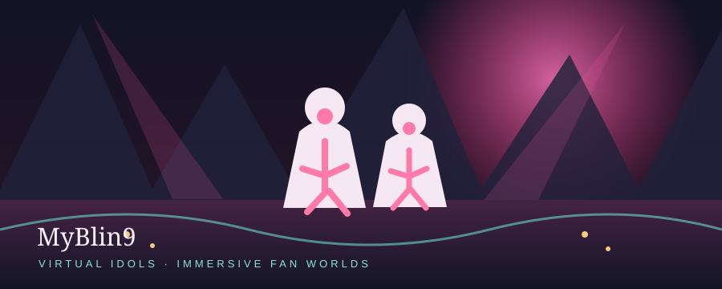

MYBLIN9
An AI-entertainment platform exploring virtual idols, immersive fan interaction, and imaginative digital experiences.
Explore MyBlin9 ↗A personal world of ideas
AI Creator · Gamer · Digital Builder
Building AI projects, gaming communities, creative worlds, and digital experiences inspired by technology and imagination.
I enjoy building AI concepts, websites, virtual entertainment projects, gaming communities, and creative digital experiences. My work combines technology, storytelling, and community-focused design.
A few things I'm building, exploring, or imagining. Each project is labeled honestly.

An AI-entertainment platform exploring virtual idols, immersive fan interaction, and imaginative digital experiences.
Explore MyBlin9 ↗A five-member AI idol group where music, character, and visual storytelling meet.
Meet SweeTeez ↗A personal concept for bringing AI agents, creative personas, and repeatable workflows into one imaginative workspace.
A concept in progress ✦Browse my public projects and learning repositories. Forks are projects I'm exploring, not work I claim to have authored.
Browse repositories ↗Beautiful places to wander, characters to meet, stories to follow, and room to make each adventure your own.
A sweeping fantasy world with the feeling of a new chapter around every horizon.
Fashion, creative customization, and dreamlike scenery make exploration feel playful.
Base-building and strange frontiers make the world feel both personal and mysterious.
Moody horizons and movement-rich exploration pair with memorable character stories.
Science-fiction worldbuilding and the promise of shaping a place over time.
A contemporary city with supernatural corners is a setting I love getting lost in.
Distinctive characters, stylish city details, and lively storytelling make New Eridu memorable.
Deep lore, hard choices, and wild places make a world worth returning to.
Original, unofficial mood illustrations—not game screenshots, logos, or official artwork.
A small achievement board for what's public today—live profile stats, repository trails, and a link to the full activity record.
Public profile snapshot · refreshed on page load
Loading current public profile stats…
Follow a project, share an idea, or wander through the things I'm making.
Game landscapes are original mood artwork, not official assets. Forked repositories and personal concepts are labeled honestly.